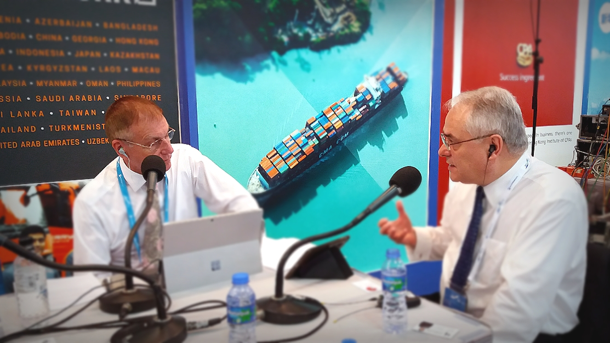

The World’s Best Public-Private Partnership Law
Recently, a client with a development agency asked me “What is the best Public-Private Partnership Law in the world?”
My joking response was “Whichever PPP Law I am currently working on with a client country!” On a more serious note however, the question did cause me to reflect on the elements that make a PPP Law particularly effective.

Some important preliminary stipulations
First of all, not every country needs a PPP Act. However, for emerging market countries that wish to develop a PPP program, there is real benefit in enacting a new law. With a new PPP Act, the country can:
- set out the institutional arrangements for the PPP program;
- define the scope and key features of the program; and
- send a message to prospective investors – both foreign and domestic – that the country is serious about doing Public-Private Partnerships.